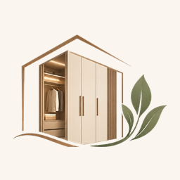

Gerçekten işçilikleri çok kaliteli. Mobilyalar tam istediğimiz gibi yapıldı ve zamanında teslim edildi. Hem ilgili hem de güvenilir bir işletme. Gönül rahatlığıyla tavsiye ederim.

2025'ten beri
Hazır dolabın sığmadığı her köşeye, odanızın milimine oturan gardırop ve mutfak dolabı üretiyoruz.
Galeri
Küçükçekmece atölyemizden gardırop, mutfak, banyo ve balkon dolabı işleri. Bir görsele dokunarak yakından bakın.

Hakkımızda
Hayallerinizi yaşam alanlarınıza taşıyoruz. Işıl Işıl Mobilya olarak İstanbul Küçükçekmece’deki atölyemizde, yaşam alanlarınıza estetik, işlevsellik ve kalite kazandırmak amacıyla özel ölçü mobilya imalatı alanında hizmet veriyoruz. Her mekânın ve her müşterinin ihtiyacının farklı olduğunun bilinciyle, beklentilerinize ve kullanım alanınıza uygun çözümler sunuyoruz. Mutfak dolaplarından gardıroplara, depolama alanlarından kişiye özel mobilya tasarımlarına kadar farklı ihtiyaçlara yönelik üretim gerçekleştiriyoruz.
Amacımız yalnızca mobilya üretmek değil, yaşam alanlarınızı daha kullanışlı, konforlu ve şık hâle getirmek. Üretim sürecimizde ölçüye uygunluk, işçilik kalitesi, estetik görünüm ve müşteri memnuniyetini ön planda tutuyoruz.
Birleşimler, menteşe ve montaj detayları atölyemizde el ile tamamlanır.
Gövde, kapak ve cam-alüminyum profilleri işin kullanımına göre seçeriz.
Gövde ve donanımlar günlük kullanıma göre seçilir, uzun yıllar dayanır.
Odanıza göre ölçü, kapak tipi ve rengi birlikte belirleriz.
Yorumlar
Google’daki müşteri yorumlarından bir seçki. Tüm yorumları gör
İletişim
Özel ölçü gardırop, mutfak ve banyo dolabı için bize telefon, WhatsApp, e-posta veya atölyeden ulaşın.

Işıl Işıl Mobilya
WhatsApp hattı
Merhaba, hoş geldiniz. Bilgi almak için lütfen yazın.
Görsel önizleme